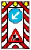
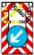
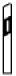
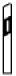

| 1 | 2 | 3 | |
|---|---|---|---|
| lfd. Nr. | Zeichen | Ge- oder Verbot Erläuterungen | |
| Abschnitt 1 Einrichtungen zur Kennzeichnung von Arbeits- und Unfallstellen oder sonstigen vorübergehenden Hindernissen | |||
| 1 | Zeichen 600 Absperrschranke | ||
| 2 | Zeichen 605 | ||
| Leitbake | |||
| Pfeilbake | Schraffenbake | ||
| 3 | Zeichen 628 | ||
 |  | ||
| Leitschwelle | |||
| mit Pfeilbake | mit Schraffenbake | ||
| 4 | Zeichen 629 | ||
 |  | ||
| Leitbord | |||
| mit Pfeilbake | mit Schraffenbake | ||
| 5 | Zeichen 610 Leitkegel | ||
| 6 | Zeichen 615  Fahrbare Absperrtafel | ||
| 7 | Zeichen 616  Fahrbare Absperrtafel mit Blinkpfeil | ||
| zu 1 bis 7 | Ge- oder Verbot Die Einrichtungen verbieten das Befahren der so gekennzeichneten Straßenfläche und leiten den Verkehr an dieser Fläche vorbei. Erläuterung
| ||
| Abschnitt 2 Einrichtungen zur Kennzeichnung von dauerhaften Hindernissen oder sonstigen gefährlichen Stellen | |||
| 8 | Zeichen 625 Richtungstafel in Kurven | Die Richtungstafel in Kurven kann auch in aufgelöster Form angebracht sein. | |
| 9 | Zeichen 626 Leitplatte | ||
| 10 | Zeichen 627 Leitmal | Leitmale kennzeichnen in der Regel den Verkehr einschränkende Gegenstände. Ihre Ausführung richtet sich nach der senkrechten, waagerechten oder gewölbten Anbringung beispielsweise an Bauwerken, Bauteilen und Gerüsten. | |
| Abschnitt 3 Einrichtung zur Kennzeichnung des Straßenverlaufs | |||
| 11 | Zeichen 620  Leitpfosten (links) (rechts) | Um den Verlauf der Straße kenntlich zu machen, können an den Straßenseiten Leitpfosten in der Regel im Abstand von 50 m und in Kurven verdichtet stehen. | |
| Abschnitt 4 Warntafel zur Kennzeichnung von Fahrzeugen und Anhängern bei Dunkelheit | |||
| 12 | Zeichen 630 Parkwarntafel | ||